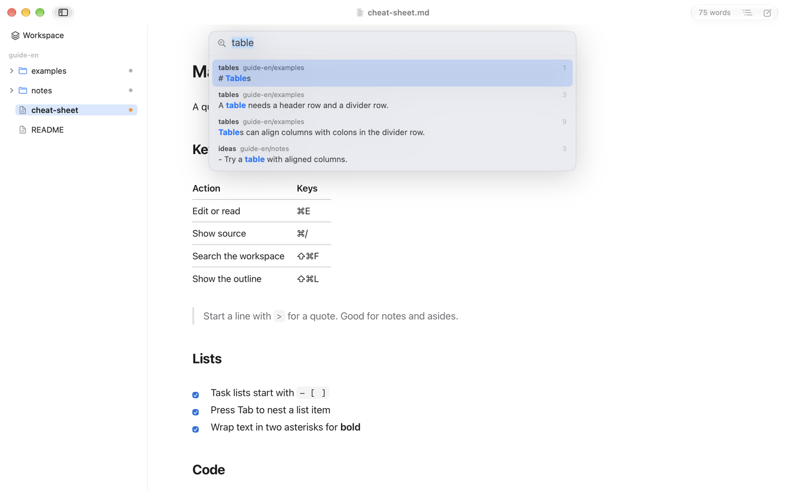

Mac용 오픈 소스 마크다운 리더 겸 편집기
열자마자 렌더링됩니다. ⌘E를 누르면 그 자리에서 편집. 저장하면 두고 간 그대로 남습니다.
Nib은 Mac용 무료 오픈 소스 마크다운 앱으로, 파일을 코드가 아닌 문서처럼 렌더링해서 엽니다. ⌘E를 누르면 그 자리에서 편집할 수 있고, Typora처럼 커서가 있는 줄만 마크다운 문법을 보여 줍니다. 저장할 때는 고친 부분만 다시 쓰므로 git에서도 파일이 깔끔합니다. 다른 프로그램이 바꾼 파일은 다시 불러오고, 모든 문서를 한 윈도우의 탭으로 모으며, 폴더 전체를 검색합니다. 네이티브 앱, 약 8MB, macOS 15 이상.
읽는 동안에는 그냥 한 장의 문서입니다.

한 단어를 고치면 git diff에도 한 단어만 나옵니다.
코딩 에이전트가 쓴 계획, 스크립트가 만든 보고서, 빌드 도구가 생성한 문서. 대부분 읽기만 하고, 가끔 한 줄 고칠 뿐입니다.
터미널, 스크립트, 에이전트가 파일을 다시 쓰면 열린 페이지가 알아서 갱신됩니다.
Finder, 터미널, 링크 어디서 열든 한 윈도우에 모입니다. ⌘1–⌘9로 전환.
변경된 파일은 주황색 점, 새 파일은 초록색 점. 커밋하면 바로 사라집니다.
⇧⌘O로 이름으로 열기. ⇧⌘F로 모든 파일을 검색해 해당 줄로 이동. 파일 2,500개를 0.25초 안에.
마지막 윈도우를 닫으면 Dock에서 사라지지만 대기 상태를 유지합니다. 다음 파일은 약 0.15초 만에 열립니다.
한동안 보지 않은 탭은 메모리를 반납하고, 다시 열면 보던 곳에서 깨어납니다.

Typora 사용자가 찾는 기능이 여기 있습니다.
파일 옆 name.assets/에 저장하고 상대 경로로 연결합니다. typora-copy-images-to 설정도 따릅니다.
브라우저, Google Docs, Lark의 서식 있는 텍스트가 깔끔한 마크다운으로 바뀝니다.
CommonMark와 GitHub Flavored Markdown 지원. Tab으로 목록 들여쓰기.
⇧⌘L로 개요. F8은 현재 문단만 남기고 흐리게. F9은 현재 줄을 가운데에 고정.
PDF로, 또는 이미지를 포함한 HTML 파일 하나로. 바로 보낼 수 있습니다.
라이트, 다크, 따뜻한 종이, 또는 Typora 테마 무엇이든. 서체, 간격, 단축키도 원하는 대로 바꿀 수 있습니다.
Typora는 그 자리 편집의 기준을 세웠습니다. MarkEdit은 빠른 네이티브 소스 편집기입니다. Obsidian은 노트 시스템 전체입니다. Nib은 마크다운을 읽고, 필요할 때 고치기 위한 앱입니다.
| Nib | Typora | MarkEdit | Obsidian | |
|---|---|---|---|---|
| 파일을 여는 방식 | 렌더링된 페이지 | 실시간 미리보기 편집기 | 구문 강조된 소스 | 실시간 미리보기 편집기 |
| 파일 위치 | 어디든 | 어디든 | 어디든 | 보관소(vault) 안 |
| 사이드바의 git 상태 | ✓ | — | — | 플러그인으로 |
| 인터페이스 | 네이티브 셸, CodeMirror 코어 | Electron | 네이티브 셸, CodeMirror 코어 | Electron |
| 플랫폼 | Mac | Mac · Windows · Linux | Mac | Mac · Windows · Linux · iOS · Android |
| 가격 · 라이선스 | 무료 · GPL-3.0 | 유료 · 독점 | 무료 · MIT | 무료 · 독점 |
Nib은 Apple 공증을 받지 않았습니다. 처음 실행할 때 한 번만 허용하세요.
Nib.dmg를 열고 Nib을 응용 프로그램 폴더로 드래그합니다.
Nib을 열고 완료를 클릭합니다. 그런 다음 시스템 설정 › 개인정보 보호 및 보안에서 그래도 열기를 클릭합니다.
Finder에서 .md 파일을 선택하고 ⌘I를 누른 뒤, 다음으로 열기에서 Nib을 고르고 모두 변경을 클릭합니다.
macOS 15 이상 필요. Apple 실리콘과 Intel을 모두 지원하는 유니버설 앱.
설정에서 모두 바꿀 수 있습니다.
| 편집 / 읽기 | ⌘E |
| 소스 | ⌘/ |
| 빠르게 열기 | ⇧⌘O |
| 작업 공간에서 검색 | ⇧⌘F |
| 사이드바 | ⌃⌘S |
| 개요 | ⇧⌘L |
| 집중 / 타자기 | F8F9 |
| 탭 전환 | ⌘1–⌘9 |
| 닫은 탭 다시 열기 | ⇧⌘T |
가장 많이 묻는 질문들.
Nib은 Typora처럼 그 자리에서 마크다운을 편집합니다. 커서가 있는 줄만 문법을 보여 줍니다. 무료이고, GPL-3.0 오픈 소스이며, Mac 네이티브 앱입니다. Typora와 달리 파일을 먼저 읽기 보기로 열고, ⌘E를 누르면 편집합니다. Typora 테마도 사용할 수 있습니다.
Nib을 .md 파일의 기본 앱으로 설정한 뒤, 터미널에서 파일 경로를 클릭하거나 Finder에서 엽니다. 이미 열린 윈도우의 탭으로 렌더링되어 열리고, 에이전트가 파일을 다시 쓰면 알아서 다시 불러옵니다. 프로젝트 폴더를 사이드바에 추가하면 마지막 커밋 이후 바뀐 파일을 볼 수 있습니다.
편집한 곳만 바꿉니다. 저장할 때 변경 사항만 쓰고, 줄 끝과 빈 줄을 포함한 나머지는 바이트 단위로 그대로 둡니다. 메타데이터를 덧붙이지 않고 숨김 파일도 만들지 않습니다.
네. 테마의 CSS 파일과 폴더를 ~/Library/Application Support/Nib/themes에 넣고 설정에서 고르면 됩니다. 읽기 보기는 테마 전체를 사용하고, 편집기는 색상과 서체를 가져옵니다. Nib은 형식만 읽을 뿐 Typora 테마를 함께 제공하지는 않습니다.
네. Nib은 GPL-3.0 라이선스의 무료 오픈 소스입니다. 계정도, 결제도 없습니다.
Nib은 Apple 공증을 받지 않았습니다. 한 번 열어 경고를 닫은 뒤 시스템 설정 › 개인정보 보호 및 보안에서 그래도 열기를 클릭하세요. 한 번만 하면 됩니다.
아직 지원하지 않습니다. math나 mermaid로 표시된 코드 블록은 코드로 보입니다.